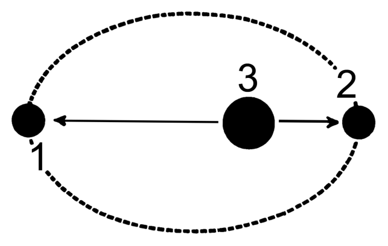

Oberth effect¶
Learning outcomes¶
Mechanical energy and conservation laws
Relate velocity to energy
Newtonian motion and forces
Introduction¶
In this example, we are going to look at a maneuver in spacetravel called the Oberth maneuver. When a rocket is orbiting around a object such as a planet , this is a way for the rocket to gain velocity and additional mechanical energy by falling into a planet’s gravitational well and applying its propelent at a very specific location in orbit.
Fundamental theory¶
Lets begin by repeating some fundamental law of physcis relevant to this particular example. In orbit the spaceship is primarily affected by the gravitaional force between its own mass and the mass of a much larger planet. If m denotes the mass of the spaceship, and M is the mass of a given planet, given that M >> m the gravitational force is given by
, the mean velocity of the spacecraft in a orbit due to this force is defined as:
, where r is the distance between the center of mass of the planet and the spaceship. And the mechanical energy is described by the sum of the spacecrafts potential energy U and kinetic energy K.
Write down the expressions for the kinetic and potential energy of the spacship
Would you excpect this quantaty to change during orbit, why?
The mechanical energy is described as \(U = - \frac{GMm}{r} + 1/2mv^2 \) , and from the law of conservation of elemental forces this constant will remain constant througout the spaceships path. In the next section we will look into the specifs of the oberth manuever and how the spacecraft should apply its propelant, but first its a good idea to familarize yourself with the terms apoasis and periapsis. These two terms relate to points of interest along the spacecraft orbit, the periapsis is the point where the spaceship is closest to the planet during orbit, and likewise the furthest point is called the apoasis.

Figure 1: Defintion of apoasis(1) and periapsis(2).
Based on the equation above, do you think the oribtal velcoty is greatest at the periapsis or the apoasis? Try also to motivate your answer from a central law of astrophysics
Energy¶
A rocket operates by transferring momentum to its propelant with a constant backwards exhaust velocity. Thus, regardles of the rocket’s intial velocity and postion in orbit, the propelent produce a constant increament to the velocity \(\delta v\) . In this example we will treat fuelusage in the rocket as brief implusive burn, We say that after a burn, the rocket alters its velocity from v to \( v + \delta v \), therby causing a change in the kinetic energy as well.
From the equation above, do you excpect the change in kinetic energy to be greater at the periapsis or the apoasis after an impulsive burn?
Given that an impulsive burn that adds 1 m/s increase to the velocity. If the rocket travels with a speed of 10 m/s at the apoasis and 100 m/s at the periapsis. Calcualte the change in kinetic energy at both locations? Was your guess correct?
If done correctly you should end up at a somewhat un-intuative result, namely that a smallar percentwise increase in the velocity still produce a greater increase in the kinetic energy.
Work¶
In order to understand this result, we can look at from the perspective of the total mechanical energy or the work being done by the propelant. Assuming that the angle between the exhaust and the traveling direction of the rocket is parallel, the work is defined as the dot product of the propelant force F and the displacement x.
Given a fixed time interval, is x greater or smaller near the periapsis compared to the apoasis during an implusive burn?
Seeing that the distance is greater at the periapsis, one would thus excpect that the impulsive burn does more work near the periapsis, therefore resulting in a greater kinetic energy increase.
Paradox¶
Earlier, we learned that the the rocket can gain addition mechanical energy by correctly applying the chemical energy in the propelent. But why is that? The maximum amount of work the propelant can do on the rocket must be constant. So where exactly does this additonal energy stem from?
Remebering the expression for the rocket’s kinetic energy, simalarly we can exrpress the change in kinetic energy of the propelant as
Lets consider the total change in kinetic energy for the entire system. Let \( K_R, K_{ex} \) denote the kinetic energy of the rocket and exhaust respectivly, likewise for their induvidual velocities, and finally let \( E_{chem} \) represent the total chemical energy of the propelent.
At what velocity does all of \( E_{chem} \) transfer to kinetic energy of the rocket? (hint: Look at the expression for \(K_{ex}\) , when is this equal to 0?)
What happens if the velocity of the rocket increases beyond this value?
Attempt to derive this expression from the changes in kinetic energy of the rocket and exhaust. (hint: Use the law of conserervation for momentum).
What then happens, is that when we increase the velocity of the rocket beyond \(1/2 v_{ex}\), the kinetic energy of the propelent becomes negative, resulting in \(K_R > \Delta E_{chem}\) meaning that the rocket “steal” some of the propelant’s mechanical energy. For more information on the underlying mathematcs, and a more in-depth derivation of the Oberth effect, please refer to this article.
Animation¶
In the animation, click and hold to apply fuel, try a coupøe of times to see if you can escape ortbit. And for a challange, try to acomplish this with spare fuel, or in a lesser amunt of orbits!
Excercise: What is the requierement for the rocekt to escape the planets orbit?